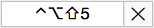
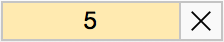

Custom Controls
While Moom's existing mouse and keyboard modes may be sufficient for many users, the ability to create custom controls lets you expand Moom's functionality beyond the built-in features. So while you don't have to use custom controls, you may find that you want to use custom controls to turn Moom into the perfect tool for your needs.
A custom control is a Moom action (moving, zooming, centering, etc.) that you define, and (optionally) assign a keyboard shortcut to activate the control.
Your custom controls can be used via the keyboard (if you assign shortcut keys), via the Moom icon in the menu bar, and even via the mouse interface (you'll need to enable custom controls on the Mouse tab of Moom's Settings window).
Custom controls can have hot keys that are either global (that is, they work regardless of the frontmost application), or that function only when Moom's keyboard control bezel is onscreen.
See About hot keys for more information on how to create and use both types of keyboard shortcuts.
General Information
Custom controls are managed through the Custom tab in Moom's Settings window. Moom ships with four defined custom controls, which you'll see when you click the Custom tab:
Those numbers on gold backgrounds are called local shortcuts; see About hot keys for more on how to create and use these shortcuts.
Notice that none of these controls have assigned keyboard shortcuts, so they won't be usable via the keyboard. But if you use Moom as a menu bar application, they'll appear in the drop-down menu when you click the Moom menu bar icon:
If you enable custom controls on the Mouse tab of Moom's Settings window, you can also see this menu in mouse mode; just click the small 'person' icon in the palette:
You do not need to keep these example custom controls around. Once you're comfortable using this feature, you can select existing entries via a mouse click (add the Shift and/or Command keys to select multiple), then click the minus sign icon at the lower left corner of the window to remove the selected custom controls.
Creating Controls
To create a new custom control, click the plus sign at the lower left corner of the Custom tab of Moom's Settings window. When you do so, a new custom control will be added to the list, and you can then edit its settings as you like.
Each custom control shares a similar design—a menu icon at the left, a pop-up menu to choose the specific action to perform, a box for entering the keyboard shortcut (if applicable), and then the actual action, displayed in a format that makes it easy to customize.
You can choose from ten Moom actions, plus two organizational functions, when creating a new Moom custom control. Here's how to use those nine actions in custom controls.
(1) Move & Zoom
Define the window by using the grid to drag out a representative window size and location, just as you do when using the grid in Moom's mouse control mode. The size of the grid is controlled by the Define window sizes using [] × [] cells pop-up menus at the bottom of the window.
(2) Move
Choose a direction for the move using the four radio buttons, define the size of the movement using the Move by pop-up menu, and optionally restrict the movement to the window's current display.
(3) Move to Edge/Corner
This one's pretty simple; use the radio buttons to choose the desired display edge for the current window. The window will not be resized, just moved.
(4) Move to Other Display
If you have more than one display, this action will move windows across displays. Indicate the desired direction using the radio buttons; enable the Resize proportionally setting to have windows adapt in size to varying display resolutions; enable the Loop through displays setting to allow Moom to cycle through your displays over and over again.
(5) Center
This action centers the window, and you can choose from the standard OS X center or the physical screen center. (The standard OS X center, which is what Apple uses, is actually notably above physical center.)
(6) Resize
Use this action to quickly resize windows to a predefined size. You need to define an anchor point for the resized window using the radio buttons, and then define the size (in pixels, horizontal x vertical) using the two input boxes.
Special modes: The Resize operation has a few special modes that can be very useful.
First, if you click the center radio button twice, it will change from a radio button () to a minus sign (). In this mode, windows will first be resized to your specified size then moved to the center (standard OS X center) of the screen—so you can center and resize in one operation.
Second, if you replace one dimension with a 0 or a = character, then that dimension will be left at its current size. For a window that's presently 1280x1024, for example, resizing it to = x 800 would leave the width at 1280 pixels.Third, you can use a % value to specify dimension; 75% would size the chosen dimension to 75% of the available space.
If you combine these last two features, you can create custom controls that resize-in-place either vertically or horizontally; this panel shows a normal centered window, and how it looks after resizing in place either horizontally or vertically:
In this example, they have been assigned single-key shortcuts, so they'll only work from Moom's onscreen keyboard bezel, but you could use global shortcuts, or no shortcuts at all. Between = and %,
(7) Grow
Grows the specified window by expanding it from the specified edge, by the defined number of pixels.
(8) Shrink
Shrinks the specified window by contracting it from the specified edge, by the defined number of pixels.
(9) Zoom to Full Screen
This action mimics the affect of clicking the green button in OS X. In OS X 10.10, it will enter full screen mode. In prior releases of OS X, it will execute a "zoom to fit" action.
(10) Revert to Original Dimensions
If a window has been moved and/or resized, this action will return it to its original position and size.
(11) Arrange Windows
This powerful custom control allows you to save and restore the positions of windows in all open applications.
If you check the Trigger automatically when switching to 1 display box, then this action will happen when the number of connected displays changes to match whatever value you choose in the 1 display pop-up box. For instance, if you use two screens at work, and one at home, set the pop-up to "1 display", and your window arrangement will activate as soon as you disconnect your extra monitor at the office.
The other option for the Trigger automatically when switching to pop-up is the display layout matches. You can use this option to trigger saved window layouts when the layout of your displays change—not just when you add or remove a display. For example, if you use a laptop closed with an external display, and then open it when disconnecting the external display. While you still have only one monitor, the resolution has changed.
When using this option, the drop-down menu will show you the resolution and position of the displays in use when the layout was saved, as seen in this screenshot:
Note that this action will be triggered not just by changing resolutions (as when switching from an external to laptop-only display), but also if the configuration of currently-attached displays change: you move the menu bar to another display, or rearrange their layout.
If you leave the Title field as it is when you create the snapshot, your saved snapshots will get auto-generated titles, based on which apps were in the snapshot:
If you type your own title, though, Moom will use that in lieu of the generated title:
If you leave Ignore obstructed windows checked, then Moom will only arrange windows that were 100% visible when you saved the snapshot. (The auto-generated title will change when you toggle this checkbox, showing exactly which programs will be in the snapshot.)
After deciding on obstructed windows and a title, arrange the windows in your open applications as you'd like them to be saved, then click the Save Snapshot button. Moom will memorize the size and location of all applicable windows (only those windows Moom can resize or move). You can then restore that saved layout via the menu, or an optional hot key shortcut.
If you hold down the Option key, any Arrange Windows entries in the Moom menu will change to read Update Snapshot instead, and present this dialog when selected:
Use Merge Snapshots to combine any new windows into the existing snapshot, and Replace Snapshot to simply update the existing snapshot for the currently-defined windows' positions.
If any of your Arrange Windows shortcuts use the Option key, you can hold down the Shift key instead of option to update the snapshot. If your shortcut contains both Shift and Option, you'll have to go into the Custom Controls section of Moom's settings to update the snapshot.
You can create as many Arrange Windows custom actions as you'd like, making it easy to switch between multiple saved layouts. If there are programs in a saved window layout that aren't running when you activate that layout, their space will be left blank—Moom will not launch the missing applications.
Remember to hit the Save Snapshot button. If you don't, then when you try to use your new custom control, you'll see this dialog box:
Click the Save Snapshot button to save the current layout. If your windows aren't yet arranged as you like, click Cancel and lay them out properly. Then reactivate your custom control and click Save Snapshot (or do so in Moom's settings).
These last two actions don't affect windows in any way. They merely help clean up and organize the display of your custom controls in the menus.
(12) Menu Header
A menu header is the small gray text that appears in the menu, above a set of custom controls—SAMPLE CUSTOM CONTROLS is an example of such a header in the predefined custom controls.
(13) Menu Separator
A menu separator is a thin gray line that divides sections of custom controls. Used together with menu headers, you can create visually separated groups of related custom controls, labeled with headers of your choosing.
About hot keys
Hot keys for keyboard shortcuts can work in two different ways: globally, or only when the Moom keyboard bezel is onscreen. To assign a shortcut, click in the box (which reads "No Shortcut") to the right of the custom action you're creating. Depending on how you create the shortcut, Moom will make it available either all the time (a global shortcut), or only when the Moom keyboard bezel is onscreen (a restricted shortcut).
If you type a multi-key shortcut using one or more of Shift, Control, Command and Option, you'll create a global shortcut, which will be available all the time, regardless of which window is frontmost when the hot keys are pressed.
If you use a single keystroke, you'll create a restricted shortcut, which can only be used when the Moom keyboard bezel is onscreen. The shortcut field will highlight in yellow to reflect the difference in these single-key shortcuts.
Global vs. restricted shortcuts
Which type of shortcuts you use depends on how you use Moom. Global shortcuts have the advantage of working any time you need them. If you center windows a lot, for instance, a global shortcut can make this a simple keystroke from every program you use. The downside of global shortcuts, however, is that they're just that—global.
When creating global shortcuts, you need to make sure you don't assign a key combination that's already in use by the system, or by another program that can create global shortcuts, or within any of your programs. As you add more and more global shortcuts, finding unique yet memorable key combos becomes even more difficult.
Enter restricted shortcuts. Because these shortcuts work only when the Moom keyboard bezel is onscreen, there's no need to worry about conflicts with the system or other applications. And because only one keystroke is needed for restricted shortcuts, they're nearly as quick to use as a complicated global shortcut—just press the keyboard trigger you defined, and then the single-key shortcut you'd like to use.
Thankfully, you don't have to choose between the two types of shortcuts—you can mix and mingle them as you wish, even creating duplicates, as seen in this sample setup:
Notice that there are two identical center shortcuts, with one being global and the other being restricted. Restricted shortcuts will show in the cheat sheet, if you've enabled that in the Keyboard section of Moom's settings. Global shortcuts will show in the Moom menu bar and mouse palette, if enabled there.
Chaining
Moom allows you to chain custom controls together into a sequence that will be executed sequentially, as if they were one continuous custom control. Chaining custom controls together lets you perform complex window management operations with a single keyboard shortcut; here are just a few examples of what can be done:
- Move a window onto another display, then center it.
- Resize a window to a defined size, then center it.
- Move a window onto another display, then zoom it to full screen.
Chaining works only with keyboard shortcuts; chained custom controls will still appear in the mouse panel's drop-down menu, and can be accessed individually, but won't execute in sequence.
Creating a chain
To create a chain of custom controls, just assign the same keyboard shortcut (whether local or global) to more than one custom control. When you assign a duplicate shortcut, you'll see this warning from Moom:
Assuming you really do want to create a chain of custom controls, click the "Assign Sequence Hot Key…" button to continue. Once assigned, when you select one item in a chain in Moom's Settings window, a visual indicator appears, letting you know that you're working with a chain of custom controls:

As chained custom controls don't have to appear next to each other, this feature makes it easy to find all custom controls associated with a given chain.
The circled blue numbers in the above screenshot—they'll appear in whatever color you've set as the primary one on your Mac's Appearance System Preferences panel—let you know the order of your chained commands (the left-side number), as well as how many total controls are in that particular chain (the right-side number).
In the above redundant example (see entry number six in Creating Controls for why it's redundant), pressing C when the keyboard bezel is onscreen (because this chain has been assigned a single-key shortcut) would first resize the frontmost window to 800x600, then center it.
Moom uses the order of your custom controls (from top to bottom) to determine the order of execution with chained commands: the first-listed custom control will execute first, and so on. To change the order of operations in a series of chained custom controls, simply reorder them via drag-and-drop.
To break a chain, all you need to do is change all involved custom controls' keyboard shortcuts, so that they're all unique. Alternatively, you can remove the keyboard shortcuts to break the chain.
Tips
The following tips will help you get the most out of custom controls:
- Create as many custom controls as you wish; there's no practical real world limit, though hundreds of entries will make the menu huge, and may take a while to populate. (Moom will add scroll bars to the Settings window once it's expanded to its maximum vertical size.)
- You can use variations of the same action over and over again—you're not restricted to just one instance of Move & Zoom, for instance. Create one that moves left and zooms to quarter size, and another that moves right and makes the window take up two-thirds of the display.
- If a custom control won't accept the keyboard shortcut you're trying to enter, it's possible that you've assigned that same shortcut in some other global application, like Butler. In that case, though, the assigned shortcut will execute whatever task you've assigned it, so it should be obvious as to why you can't use it in Moom.
- The menu icons are representative of each defined custom control. If you create a Move & Zoom entry that anchors to the lower right corner and sizes to 75% of your display space, the small icon will reflect those settings. When viewing the menu, use these icons as a reminder of the exact functionality you assigned to each custom control.
- Rearrange custom controls by clicking and dragging into the order you'd like them to appear in the menu.
- To make it easier to reorganize your custom controls, first use the disclosure triangle () to collapse each of your custom controls. You'll find them much easier to drag around (and select) with them all collapsed. Tip within a tip: Hold down Shift and click any disclosure triangle to collapse (or expand) all defined custom controls.
- Delete custom controls by selecting them with a mouse click, and then pressing the "minus" button at the bottom left of the window. You can select more than one custom control by holding down the Shift (select all from selected to clicked-upon target) or Command (select and individually add each clicked-upon target) keys. Note: There is no confirmation prior to deletion.
Custom controls are extremely powerful, and let you turn Moom into a customized tool that does exactly what you need it to do. As always, if you have questions on custom controls (or any feature in Moom or any of our other apps), please use our Moom support page to file a help request.